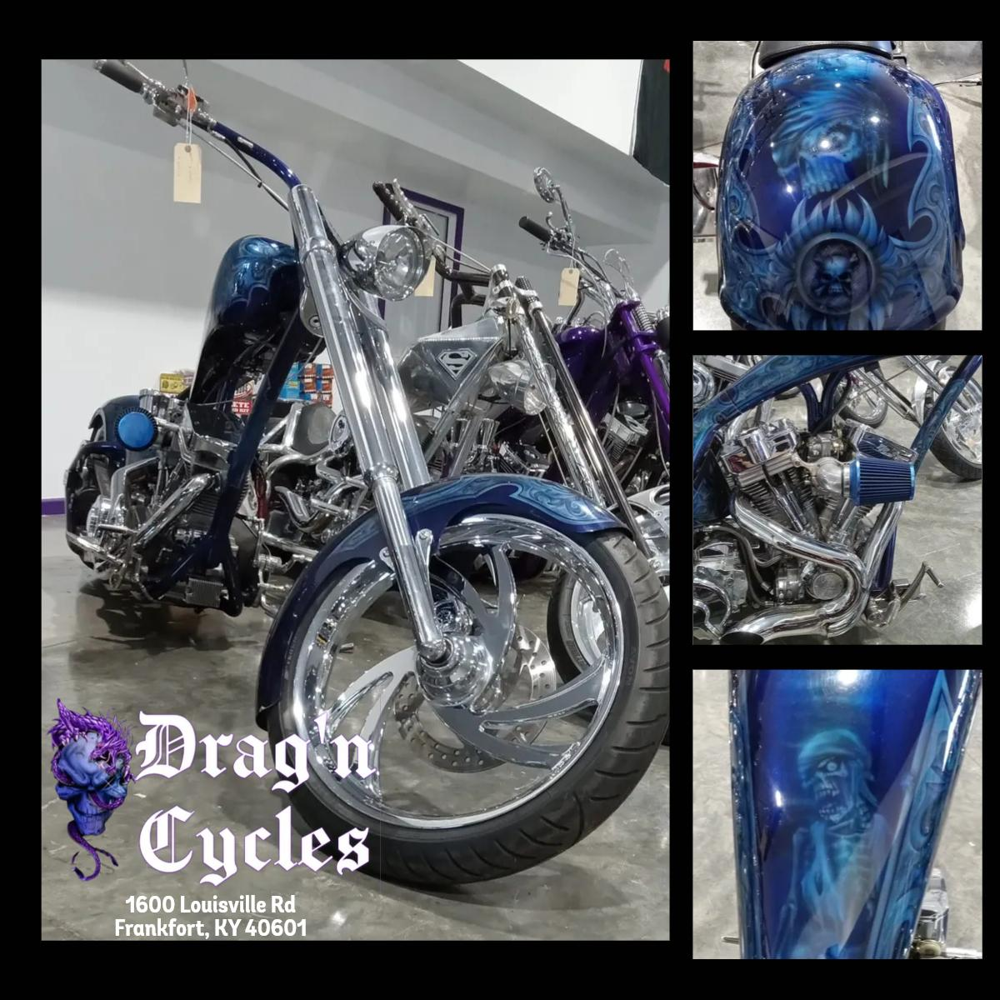
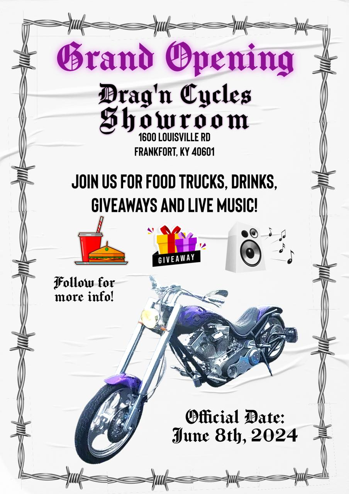

How we turned custom bikes into foot traffic
The challenge: a new showroom with incredible custom builds, but low awareness. My work: make Instagram, Facebook, and YouTube drive visits — and set up Google to capture demand.
Work samples below, plus a real Search Console export (Jun 19 – Sep 18, 2026). Traffic and ROI figures are client-reported for the role; the measurement notes at the bottom show what was tracked and what is still being pulled.

The inventory sold itself once people saw it. This build became our hero creative across Instagram and Facebook.
Post 1: Lead with the bike, not the logo
I started with what stopped the scroll: close-ups of paint, chrome, and stance — not flyers. We posted consistently via Meta Business Suite, tested hooks in the first line, and pushed video walkarounds on YouTube. Storefront visits started coming from comments and DMs asking “is this still in the showroom?”
Post 2: Give people a reason to show up

For the June 8th Grand Opening I made one clear CTA creative and pinned it everywhere. Food trucks + giveaways + live music gave followers a date, not just a vibe. That post became the template for partnership campaigns: one offer, one address, one date.
What Search Console shows (last 3 months, real export)
Export: dragncycles.com-Performance-on-Search, Jun 19 – Sep 18, 2026 (92 days). Web search only.
| Top query | Clicks | Impr. | Pos | Read |
|---|---|---|---|---|
| dragon cycles frankfort ky | 142 | 387 | 1.2 | Branded #1 (note spelling: dragon) |
| motorcycle shops near me | 17 | 205 | 7.5 | Page 1 bottom — push to top 3 |
| motorcycle dealers near me | 8 | 37 | 7.7 | Same opportunity |
Takeaways: (1) Branded dominates (~3/4 of clicks) — defend it, fix spelling variants
(dragon vs drag'n). (2) Non-branded “near me” gets impressions at pos ~7–8 — winning
those to pos 1–3 is the growth lever. (3) Mobile = 658 clicks at pos 6.5 vs desktop
97 clicks at pos 23.5 — check desktop experience + canonicals. (4) Pages show
http:// vs https:// split (568 vs 142 clicks) — consolidate
to one canonical. Inventory price pages rank pos ~3 — keep feeding them.
Next: GA for both companies
Now that GSC is in, same pattern for GA4:
- GA4 → Reports → Acquisition: sessions by source/medium (social vs organic), last 90 days — export CSV to
assets/projects/dragn-cycles/data/ - Same for Mr. Unclog into
assets/projects/mr-unclog-drains/data/ - Then I’ll add a 2-line “social → site” bridge to each case study (no raw PII published — aggregates + charts only, with owner permission)
Tools
Meta Business Suite • Instagram / Facebook / YouTube • Google Analytics • Search Console